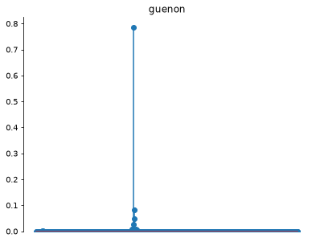
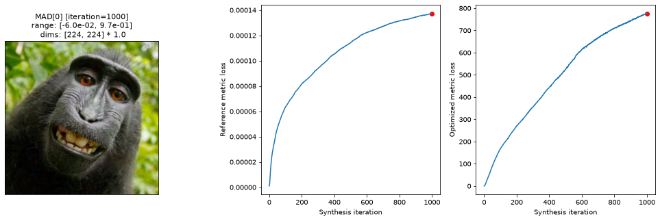
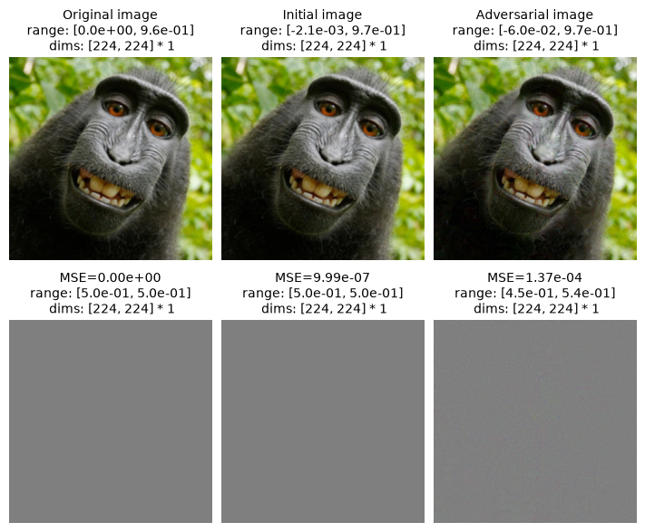
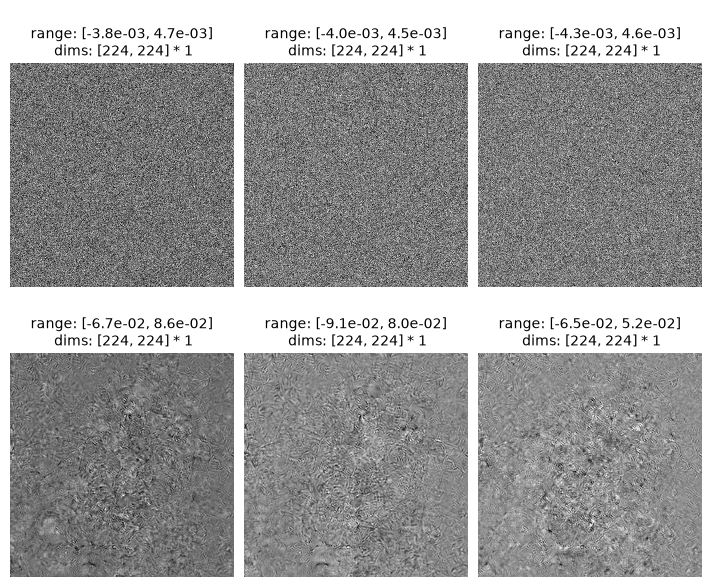
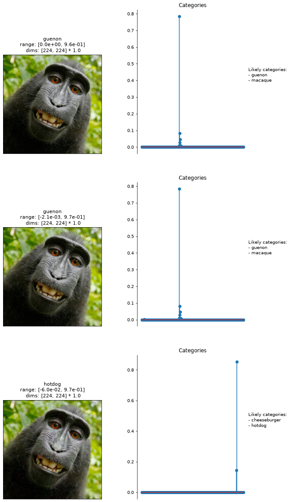

Run this notebook yourself!
Download the executed notebook: adversarial_examples_mad.ipynb!
Run it in your browser: adversarial_examples_mad.ipynb!
Generate adversarial examples using MAD Competition#
Warning
This notebook requires the optional dependency torchvision, which can be installed with pip.
In this notebook we demonstrate how we can use the MADCompetition class to synthesize adversarial examples. Adversarial examples are tiny perturbations to an image that causes Deep Neural Networks to misclasify (Goodfellow et al., 2015). MAD competition is used to falsify metrics/models of human perception by generating a pair of images that have the same value for the reference metric but extremal values (highest and lowest) for the optimized metric and testing human sensitivity to this pair of images. In this notebook we demonstrate a different use of the MADCompetition class and show how its underlying machinery can be readily used to generate adversarial examples of Deep Neural Networks. At a high level, this is achieved by defining a reference metric in pixel space (the value of which we want to be low) an optimized metric in model representation space (the value of which we want to be high).
import matplotlib.pyplot as plt
import numpy as np
import torch
import plenoptic as po
# this notebook uses torchvision, which is an optional dependency. if this import fails,
# install torchvision in your plenoptic environment and restart the notebook kernel.
try:
import torchvision
except ModuleNotFoundError:
raise ModuleNotFoundError(
"optional dependency torchvision not found!"
" please install it in your plenoptic environment "
"and restart the notebook kernel"
)
DEVICE = torch.device("cuda" if torch.cuda.is_available() else "cpu")
%load_ext autoreload
%autoreload 2
# so that relative sizes of axes created by po.plot.imshow and others look right
plt.rcParams["figure.dpi"] = 72
# set seed for reproducibility
po.set_seed(0)
Prepare model and image for synthesis#
In this section, we initialize a plenoptic-compatible model using the weights from TorchVision. We use the standard ImageNet-trained ResNet50 as our network to attack. You may be also interested in checking out Using Deep Neural Networks with plenoptic for details of choosing layer and preprocessing of the input image, and using models from timm.
Initialize deep neural network and pre-trained weights#
First, we download the model weights for ResNet50 trained on ImageNet-1K and initialize the torchvision model.
weights = torchvision.models.ResNet50_Weights.IMAGENET1K_V1
deepnet = torchvision.models.resnet50(weights=weights)
Next, we ensure that our model is in evaluation mode. Many models, including ResNet50, behave differently when in training and evaluation mode. In plenoptic, models are fixed and so we want the evaluation behavior (see here for more details):
deepnet.eval();
Specify preprocessing#
We create a separate preprocessing transform, using the specified mean and std to normalize the input image.
transform = weights.transforms()
norm = torchvision.transforms.Normalize(transform.mean, transform.std)
Select layer#
Next, we specify the layer to target. Because the goal of adversarial examples is misclassification, the simplest choice is the final fully connected layer, containing probabilities for the 1000 categories.
target_layer = "fc"
Prepare the image#
Now, let’s prepare the image. The input image needs to be an RGB image with a height and width of 224 pixels. It should probably also be like those found in ImageNet: a single object in the center of the frame that belongs to one of the image classes. We’ll use one of the famous monkey selfies, and resize it appropriately:
img = po.data.macaque()
# here we downsample the original image by a factor of 4 and then lop off the bottom.
# that way, when we take the central 224 pixels in the following block, we end up with a
# decent image.
img = po.process.blur_downsample(img, 2)[..., :-59, :]
img = po.process.center_crop(img, transform.crop_size[0])
po.plot.imshow(img, as_rgb=True);

Last steps#
Now we create our model by passing the neural network, target layer, and preprocessing transform to plenoptic’s DeepNetFeatures:
model = po.models.DeepNetFeatures(deepnet, target_layer, norm)
Finally, let’s remove the gradient from all model parameters (as models in plenoptic are fixed), convert everything to float64, for reproducibility, and move everything to DEVICE:
img = img.to(DEVICE).to(torch.float64)
model.to(DEVICE).to(torch.float64)
deepnet.to(DEVICE).to(torch.float64)
po.remove_grad(model)
Visualizing classification of the clean image#
First let us extract all the ImageNet categories:
imagenet_categories = np.asarray(weights.meta["categories"])
Let us define two helper functions. convert_logits_to_probs converts logits to probabilities that sum to 1. For an input image, get_category returns the vector containing the category probabilities and name of the category with the highest probability.
def convert_logits_to_probs(logits):
return torch.nn.functional.softmax(logits, dim=1).squeeze()
def get_category(image):
category_probs = convert_logits_to_probs(deepnet(norm(image))).detach().cpu()
category = imagenet_categories[category_probs.argmax()]
return category_probs, category
ResNet50 is trained to classify images into one of 1000 categories. The category, guenon, is an Old World monkey. Though it isn’t the actual species of the monkey in question (a Celebes crested macaque), it’s a reasonable category for it. Notice the model is also highly confident in its classification (probability of ~0.8)
category_probs, category = get_category(img)
po.plot.stem_plot(category_probs, title=category);

Define optimized and reference metric#
To qualify as an adversarial example, the image must satisfy two requirements: (1) the perturbation in image space is small and (2) the model outputting an incorrect classification with high confidence (Goodfellow et al., 2015). Conveniently, we already have these two ingredients built into the MAD competition framework. More concretely, if we define the reference metric in pixel space and ask it to not change or minimally change, and define the optimized metric in representation space, in which we make the image representation as far away from the original as possible, we would be able to meet the two requirements and accomplish our goal. For the reference metric, we use the the simple mean-squared-error (MSE).
def reference_metric(x, y):
return po.metric.mse(x, y).mean() # .mean() averages across the RGB channels
For the optimized metric, we use the MSE of output logits in the last layer of the network.
def optimized_metric(x, y):
return po.metric.mse(model(x), model(y))
Synthesize the adversarial image#
We want to maximize optimized_metric while holding reference_metric fixed. Therefore we set minmax to “max”. metric_tradeoff_lambda controls the relative weight of optimized_metric_loss and reference_metric_loss in the objective function. We found a metric_tradeoff_lambda value of 1e10 generally produced good adversarial examples for the monkey image.
mad = po.MADCompetition(
img, optimized_metric, reference_metric, "max", metric_tradeoff_lambda=1e10
)
How does metric_tradeoff_lambda affect the adversarial image
We conducted a hyperparameter search and found increasing metric_tradeoff_lambda led to decrease in both optimized_metric_loss and reference_metric_loss. This makes intuitive sense as a harsher penalty to keep reference metric loss the same will inevitably come at the cost of the optimized metric loss not increasing (the opposite of what we want). In practise, it would require experimenting with various choices to find the appropriate metric_tradeoff_lambda
We set the initial noise to be a small value so the initial image is closer to the solution that we want: an image with small deviations in the pixel values from the original but produces large changes in the representation. We also set a custom learning rate value of 0.001 even though you should generally obtain good results with higher or lower learning rates provided the synthesis runs for long enough.
mad.setup(initial_noise=0.001, optimizer_kwargs={"lr": 0.001})
Running the synthesis generates an image that looks just like the original image but we see the optimized metric loss has increased significantly. Even though the reference metric loss measured in pixel space has also increased a little bit, it is not nearly as big as the change in the representation space.
mad.synthesize(1000)
po.plot.synthesis_status(mad);
Clipping input data to the valid range for imshow with RGB data ([0..1] for floats or [0..255] for integers). Got range [-0.06029253260514439..0.9700255446779031].

Visualizing the adversarial image#
Let us compare how the synthesized image compares to the original and initial images. In the bottow row the original image is subtracted to visualize the changes in pixels. There is no change in the left image. In the middle image we see some hardly noticeable noise. In the last image we see a low amount of pixel noise.
imgs = [img, mad.initial_image, mad.mad_image]
mse = [po.metric.mse(img, i) for i in imgs]
titles = ["Original image", "Initial image", "Adversarial image"]
diffs = [(i + 1) / 2 for i in [img - img, mad.initial_image - img, mad.mad_image - img]]
titles.extend([f"MSE={m.mean().item():.2e}" for m in mse])
imgs.extend(diffs)
po.plot.imshow(imgs, as_rgb=True, title=titles, col_wrap=3);
Clipping input data to the valid range for imshow with RGB data ([0..1] for floats or [0..255] for integers). Got range [-0.0021098884542165445..0.9664974362759408].
Clipping input data to the valid range for imshow with RGB data ([0..1] for floats or [0..255] for integers). Got range [-0.06029253260514439..0.9700255446779031].

We can also visualize the difference in each color channel for the initial image (top row) and adversarial image (bottom row).
channelwise_diffs = [mad.initial_image - img, mad.mad_image - img]
po.plot.imshow(channelwise_diffs, col_wrap=3);

Finally let us visualize the category probabilities of the original, initial, and advesarial images using stem plots. We see that the network thinks the synthesized image is a burrito with almost 100% certainty! We have successfully generated an adversarial example of the network.
fig, axes = plt.subplots(3, 2, figsize=(10, 20))
for i, img in enumerate([mad.image, mad.initial_image, mad.mad_image]):
category_probs, category = get_category(img)
likely_cats = "\n- ".join(list(imagenet_categories[category_probs > 0.05]))
most_likely_cat = imagenet_categories[category_probs.argmax()]
po.plot.imshow(img, ax=axes[i, 0], as_rgb=True, title=most_likely_cat)
po.plot.stem_plot(category_probs, ax=axes[i, 1], ylim=False)
axes[i, 1].set_title("Categories")
axes[i, 0].xaxis.set_visible(False)
axes[i, 0].yaxis.set_visible(False)
axes[i, 1].text(
1, 0.5, f"Likely categories:\n- {likely_cats}", transform=axes[i, 1].transAxes
)
Clipping input data to the valid range for imshow with RGB data ([0..1] for floats or [0..255] for integers). Got range [-0.0021098884542165445..0.9664974362759408].
Clipping input data to the valid range for imshow with RGB data ([0..1] for floats or [0..255] for integers). Got range [-0.06029253260514439..0.9700255446779031].

This notebook demonstrates how to generate adversarial examples using the MADCompetition class. We encourage you to experiment with different images and hyperparameters to generate other adversarial examples yourself!